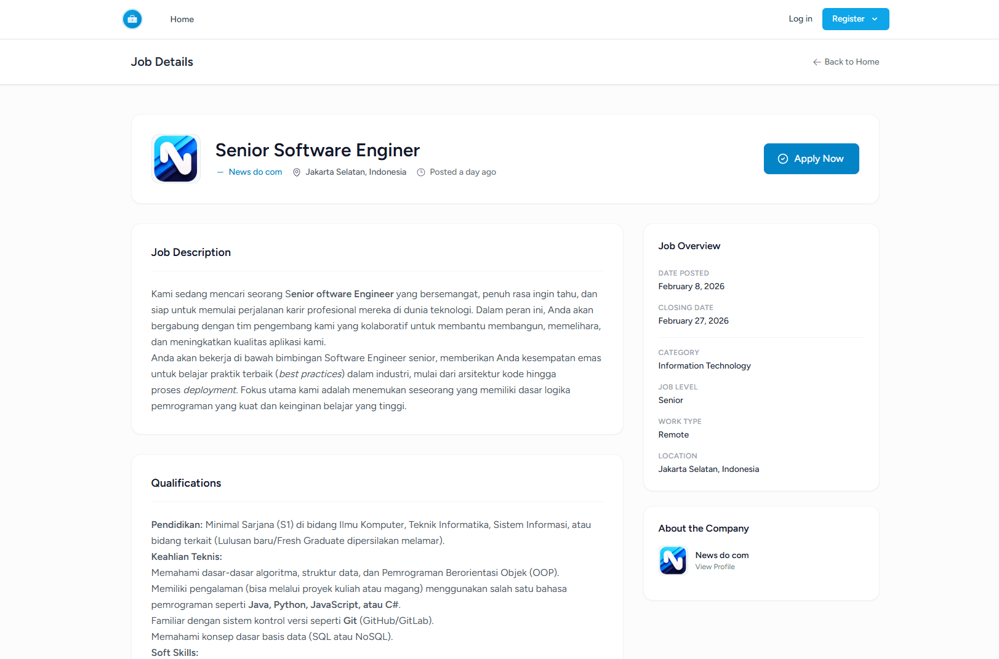
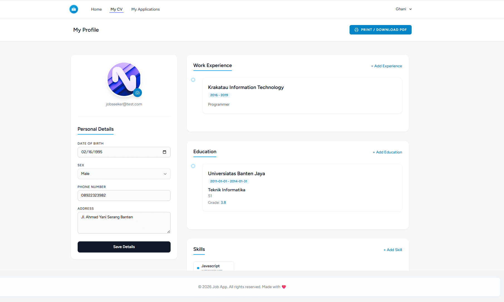
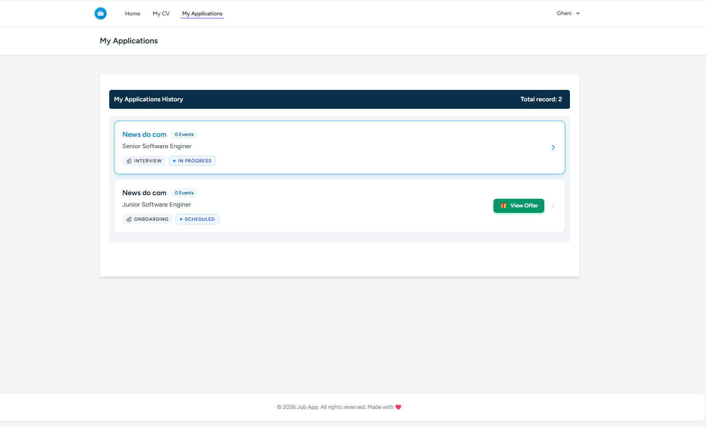
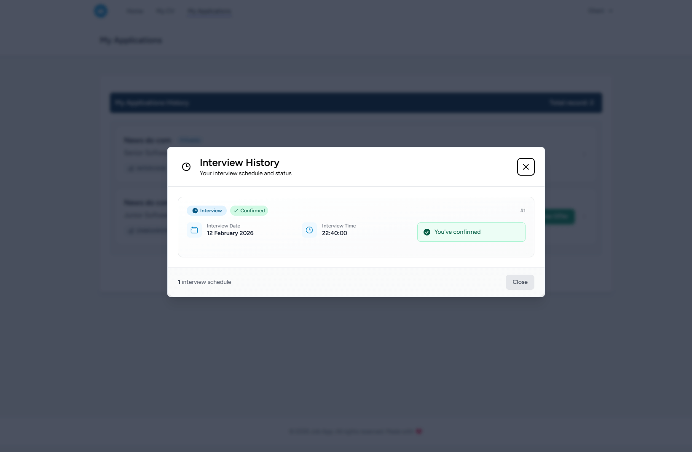
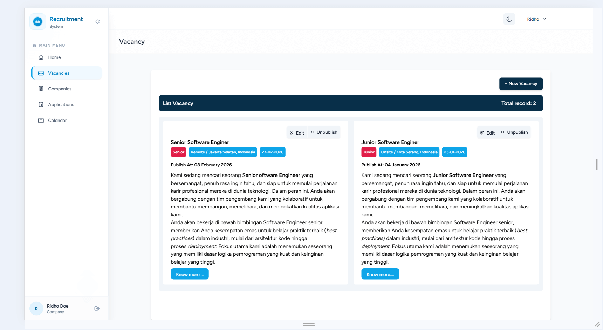
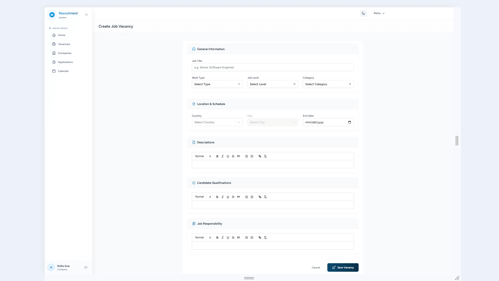

Intro
Sistem manajemen rekrutmen berbasis Laravel dan React/Inertia.js ini benar-benar jadi game changer karena fiturnya yang serba otomatis. Untuk perusahaan, kamu bisa mengelola seluruh recruitment funnel dalam satu dasbor—mulai dari pasang loker, memindahkan kandidat antar tahap (seperti screening ke interview), hingga kirim undangan wawancara secara instan. Admin juga punya kontrol penuh buat utak-atik data master, kelola akun pengguna, sampai kustomisasi status seleksi biar pas banget sama kebutuhan operasional kamu. Beberapa fitur yang ada di aplikasi ini, diantaranya:
-
Untuk Perusahaan
- Manajemen Rekrutmen: Membuat, mengubah, menerbitkan, dan membatalkan publikasi lowongan kerja.
- Pelacakan Pelamar: Melihat dan mengelola lamaran yang masuk.
- Corong Rekrutmen (Recruitment Funnel): Memindahkan kandidat melalui berbagai tahapan (Skrining, Wawancara, Asesmen, Penawaran).
- Penjadwalan Wawancara: Mengirimkan undangan wawancara kepada kandidat.
- Profil Perusahaan: Mengelola branding dan rincian informasi perusahaan.
-
Untuk Pencari Kerja
- Pencarian Kerja: Menjelajah dan menyaring lowongan berdasarkan kategori, lokasi dan tipe pekerjaan.
- Pembuat Resume (CV): Mengelola riwayat pendidikan, pengalaman kerja, keahlian dan data pribadi.
- Riwayat Lamaran: Memantau status pekerjaan yang telah dilamar.
- Lamaran Pekerjaan: Melamar pekerjaan dengan satu klik menggunakan CV yang tersimpan.
-
Untuk Administrator
- Manajemen Data Master: Mengontrol semua opsi pilihan (Tingkat Jabatan, Tipe Pekerjaan, Kategori, Keahlian, dll).
- Manajemen Pengguna: Mengawasi seluruh pengguna dan perusahaan.
- Konfigurasi Sistem: Mengelola tahapan dan status rekrutmen.







Instalasi App
-
Klon Repositori
git clone <repository-url>
cd Recruitment -
Instal Dependensi PHP
Gunakan Composer untuk menginstal dependensi backend:
composer install -
Instal Dependensi JavaScript
Gunakan npm atau yarn:
npm installatauyarn install -
Konfigurasi Aplikasi
-
File Environment: Salin file contoh untuk membuat
konfigurasi lokal.
cp .env.example .env -
Generate App Key:
php artisan key:generate -
Konfigurasi Database: Buka file
.envdan perbarui pengaturan database sesuai pengaturan lokal Anda:
DB_CONNECTION=mysql
DB_HOST=127.0.0.1
DB_PORT=3306
DB_DATABASE=Recruitment_db
DB_USERNAME=root
DB_PASSWORD=
Catatan: Pastikan Anda telah membuat database (contoh: Recruitment_db) di server MySQL Anda sebelum melanjutkan.
-
File Environment: Salin file contoh untuk membuat
konfigurasi lokal.
-
Pengaturan Database
Jalankan migrasi dan seeder untuk menyiapkan struktur database dan data awal (termasuk pengguna admin, kategori, dan peran/roles):
php artisan migrate --seed
Atau jalankan secara terpisah:
php artisan migratedanphp artisan db:seed -
Konfigurasi Email & Antrean (Queue)
Aplikasi ini menggunakan Laravel Queues untuk mengirim email secara asinkron.-
Konfigurasi Mail Driver: Di file
.env, atur kredensial server email Anda. Untuk pengembangan lokal, gunakan Mailtrap:
MAIL_MAILER=smtp
MAIL_HOST=sandbox.smtp.mailtrap.io
MAIL_PORT=2525
MAIL_USERNAME=username_anda
MAIL_PASSWORD=password_anda
MAIL_ENCRYPTION=tls -
Konfigurasi Queue Driver: Setel koneksi antrean ke
database:
QUEUE_CONNECTION=database
-
Konfigurasi Mail Driver: Di file
-
Pengaturan Penyimpanan File
Buat tautan simbolis agar file yang diunggah dapat diakses melalui web:
php artisan storage:link -
Menjalankan Aplikasi
Buka dua terminal terpisah:-
Terminal 1 (Backend):
php artisan serve
Aplikasi akan tersedia di http://127.0.0.1:8000 -
Terminal 2 (Frontend):
npm run devatauyarn dev
-
Terminal 1 (Backend):
-
Kredensial Default (Seeder)
Gunakan kredensial berikut untuk masuk sebagai Administrator:- Email:
admin@test.com - Password:
test
- Email:
-
Informasi Tambahan
-
Queue Worker: Jika notifikasi email aktif, jalankan
worker antrean untuk memproses tugas:
php artisan queue:work -
Production Build: Untuk membuild aset frontend untuk
peluncuran produksi:
npm run buildatauyarn build
-
Queue Worker: Jika notifikasi email aktif, jalankan
worker antrean untuk memproses tugas: